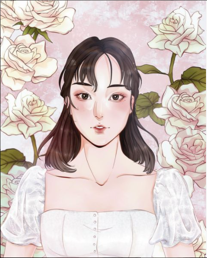
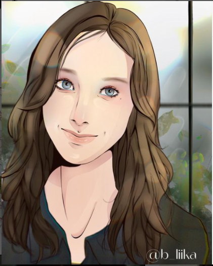

Quadro: Secret Garden
Quadro:quiet
Quadro:Na-Yeon with the daisies flowers
Essas são algumas das artes digitais que eu crio. O material que utilizo para desenhar digitalmente
pelo computador é uma mesa digitalizadora CTL4100, você pode encontrar um exemplar no site da wacom.
Você pode acompanhar pela minha página no instagram @b_liika,lá eu posto as novas artes e processos.